L'impronta ecologica della guerra: trasformazioni del paesaggio vegetale in Ucraina rilevate attraveros il remote sensing
I conflitti armati rappresentano una delle principali fonti di alterazione dei sistemi territoriali, con effetti diretti e indiretti sugli ecosistemi naturali. In contesti caratterizzati da limitato accesso, il telerilevamento satellitare costituisce uno strumento fondamentale per il monitoraggio ambientale su larga scala. Il presente studio analizza l’impatto del conflitto Russia–Ucraina sul paesaggio vegetale attraverso l’utilizzo di immagini Sentinel-2. L’analisi si concentra sulle aree prossime alla linea del fronte, considerate zone ad elevato disturbo ecologico. Sono stati calcolati gli indici NDVI, NDWI, SAVI e LAI per due periodi temporali (2020 e 2024) e analizzati in relazione alla distanza dalla linea del fronte (5, 10 e 20 km). I risultati evidenziano variazioni significative degli indici, suggerendo dinamiche ecosistemiche complesse e una distribuzione spaziale dell’impatto non uniforme, strutturata secondo un gradiente legato alla distanza dal fronte.
L’analisi è stata condotta utilizzando immagini Sentinel-2 Level-2A elaborate sulla piattaforma Google Earth Engine (GEE), che consente l’elaborazione di dati geospaziali su larga scala in ambiente cloud. Per ciascun anno di riferimento (2020 e 2024) sono state selezionate immagini nel periodo giugno–agosto, corrispondente alla fase di massima attività vegetativa, successivamente aggregate mediante compositi mediani stagionali. Sono stati calcolati quattro indici spettrali (NDVI, NDWI, SAVI e LAI), successivamente aggregati a una risoluzione spaziale di 50 m per ridurre la variabilità locale. I valori degli indici sono stati estratti mediante campionamento spaziale lungo buffer di 5, 10 e 20 km dalla linea del fronte. Le analisi statistiche sono state effettuate in ambiente R mediante T-test, test di Kruskal-Wallis e test post-hoc di Dunn, al fine di valutare differenze temporali e spaziali.
L’analisi multitemporale evidenzia variazioni significative degli indici di vegetazione tra il periodo pre-conflitto (2020) e il periodo di conflitto (2024). In particolare, NDVI e SAVI mostrano un incremento nel 2024 rispetto al 2020, mentre l’NDWI evidenzia una tendenza alla diminuzione. Il LAI presenta invece una risposta più eterogenea, suggerendo una maggiore complessità nei processi strutturali della vegetazione.
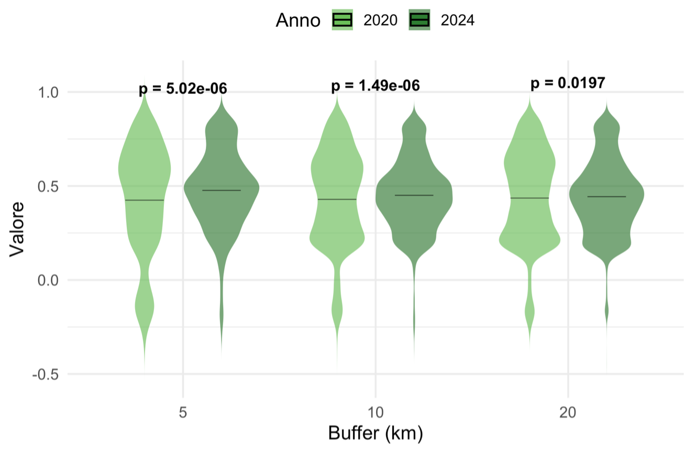
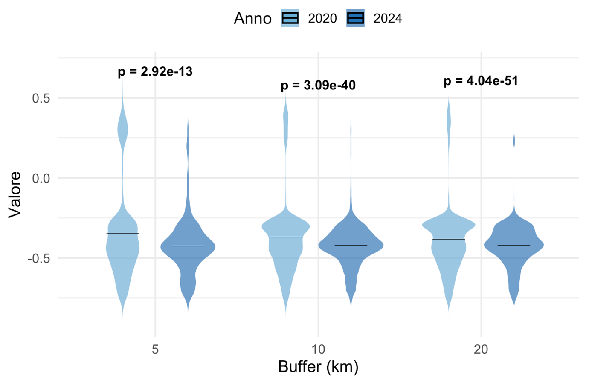
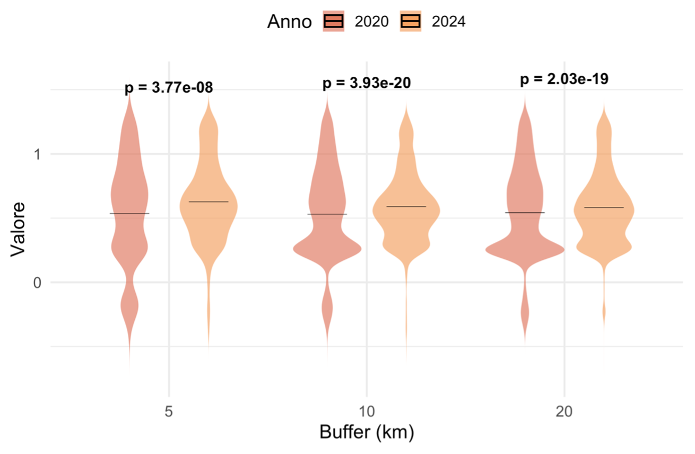
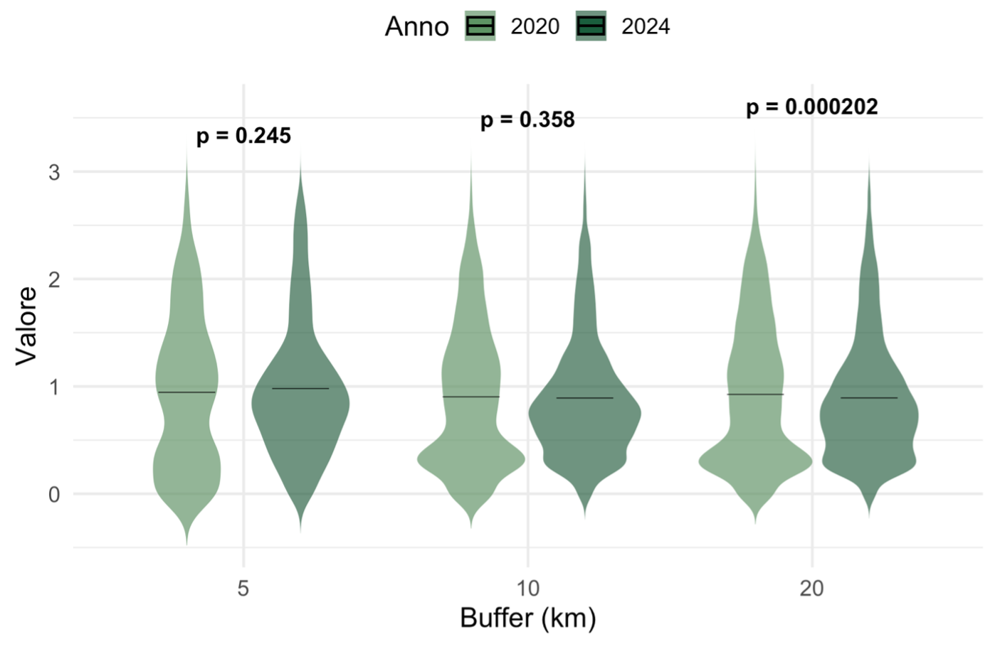
Per quanto riguarda la distribuzione spaziale, nel 2020 non emergono differenze statisticamente significative tra i buffer, indicando una relativa omogeneità delle condizioni ecologiche nelle diverse fasce di distanza.
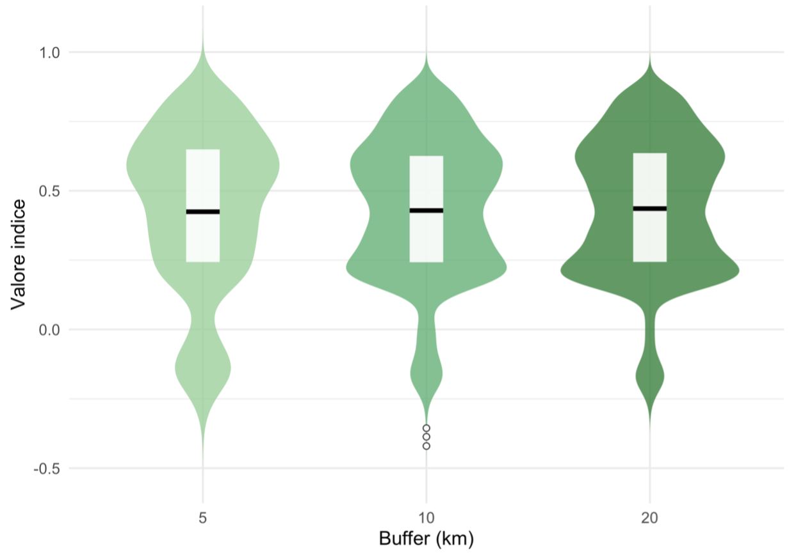
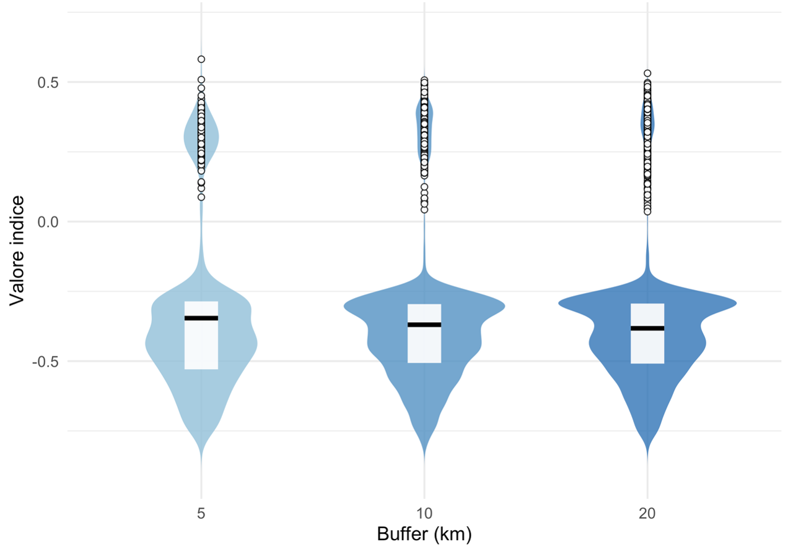
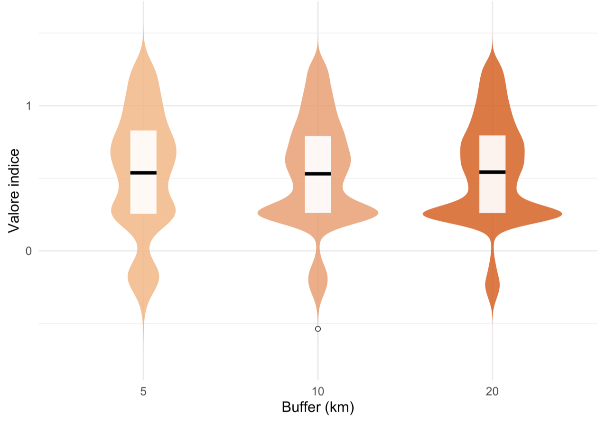
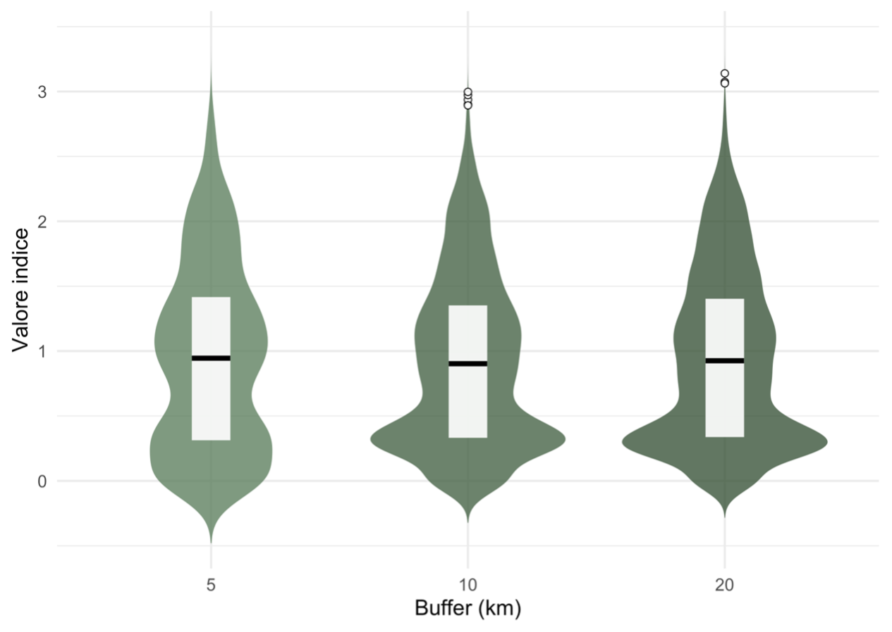
Al contrario, nel 2024 si osservano differenze significative tra i buffer, con variazioni più marcate nelle aree prossime alla linea del fronte. Questo risultato suggerisce che l’intensità del disturbo ambientale diminuisce progressivamente all’aumentare della distanza dalle aree di combattimento attivo.
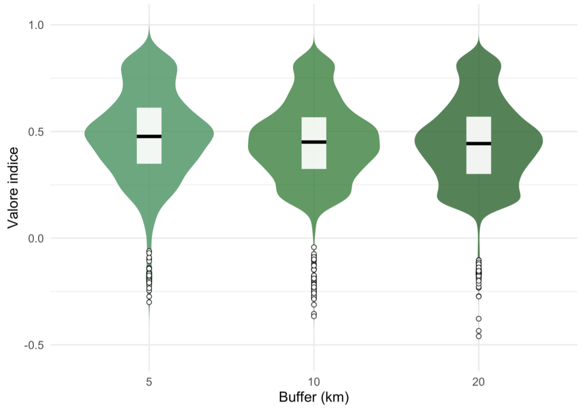
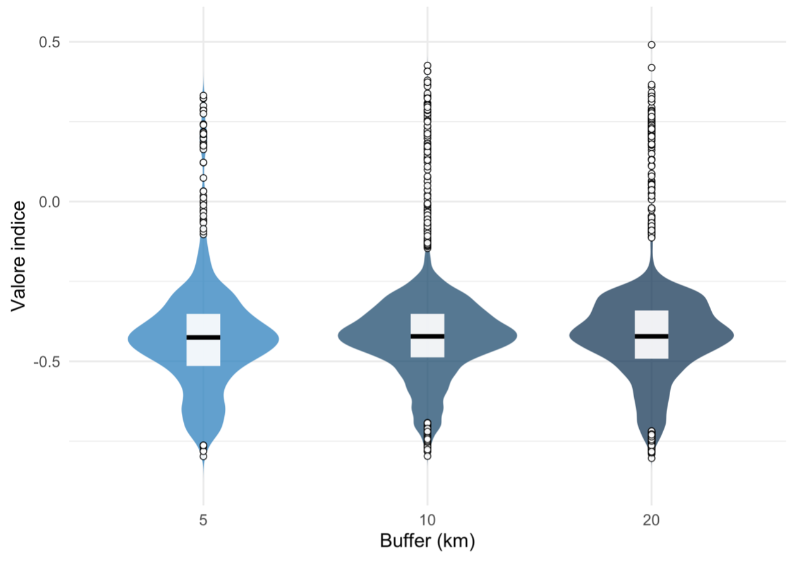
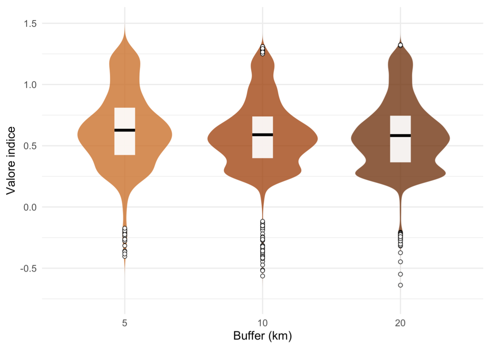
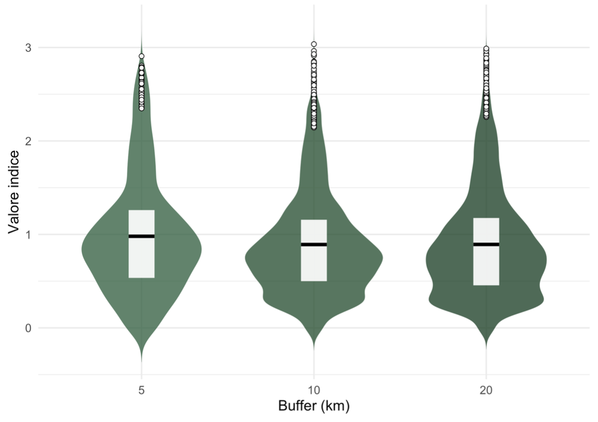
Nel complesso, il pattern osservato può essere interpretato come una firma ecologica del conflitto, evidenziando come le dinamiche ambientali risultino spazialmente strutturate in relazione all’intensità delle operazioni militari.
Il workflow completo, inclusi gli script sviluppati in Google Earth Engine e le analisi statistiche in R, è disponibile nel repository GitHub.
👉 Visualizza il codice completo
Il conflitto Russia–Ucraina ha determinato trasformazioni significative sugli ecosistemi analizzati, con effetti differenziati nello spazio e nel tempo. I risultati evidenziano che le risposte della vegetazione non sono riconducibili unicamente a processi di degradazione, ma riflettono dinamiche ecosistemiche complesse, influenzate dall’interazione tra disturbo antropico e capacità di adattamento degli ecosistemi. L’emergere di un gradiente spaziale legato alla distanza dalla linea del fronte conferma che l’impatto del conflitto non si distribuisce in modo uniforme, ma segue una struttura territoriale ben definita. Lo studio dimostra il valore del telerilevamento come strumento efficace per il monitoraggio ambientale in contesti di crisi, contribuendo alla comprensione delle trasformazioni ecosistemiche associate ai conflitti armati.